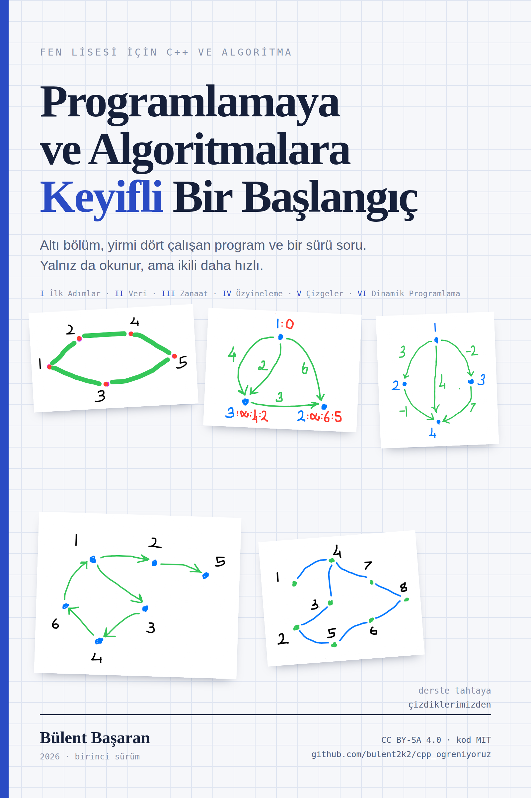

Bu kitapçık iki dönemlik ders notlarımızın, birlikte yazdığımız programların ve sorduğunuz soruların damıtılmış hâli. Amacı size programlamayı anlatmak değil; kendi kendinize öğrenebileceğinizi fark ettirmek. Bir de arkadaşınızla yan yana oturunca işin ne kadar hızlandığını.

Programlamayı öğrenmenin en zor tarafı, ilk birkaç haftanın insana “ben bunu beceremem” dedirtmesi. Noktalı virgül unutulur, derleyici anlaşılmaz bir hata verir, program çalışır ama yanlış sayı yazar. Sonra bir gün bir şey tıklar: bilgisayarın aslında son derece aptal ama son derece itaatkâr olduğunu anlarsınız. O günden sonrası keyif.
Bu kitapçık o günü öne çekmek için yazıldı. İçindeki her kavram, derslerimizde gerçekten yazdığımız, çalıştırdığımız ve bazen de hata verdiği için birlikte düzelttiğimiz programlardan geliyor. Hataları da sakladım, çünkü hata bulmak programcılığın yarısı.
Altı bölüm var. İlk üçü temeli kuruyor: dil, veri ve zanaat. Son üçü algoritmalara ayrılmış: özyineleme, çizgeler ve dinamik programlama. Sırayla okumanız gerekmiyor ama sırayla okursanız her bölüm bir öncekine yaslanacak.
Altı ilke. Hepsi derslerde pahalı yollardan öğrendiğimiz şeyler; hiçbiri kitaptan okunmadı.
Takıldığınızda geçirdiğiniz süreyi ölçün. Yirmi dakika ilerleyemediyseniz, problemi bir arkadaşınıza yüksek sesle anlatın. Anlatırken çözdüğünüz çok olacak. Buna “lastik ördek yöntemi” deniyor: karşınızdaki dinlemese de olur, hatta ördek bile olur.
Bu kitapçığın en önemli sayfası burası. Programlamayı tek başınıza öğrenebilirsiniz — buna hiç şüphem yok, insanlar öğreniyor. Ama iki ya da üç kişilik küçük takımlarla çalışanların ne kadar hızlı yol aldığını her dönem görüyorum. Nedeni de basit: programlamanın zor kısmı yazmak değil, düşünmek. Düşünmek de tek başına yapılınca kısır döngüye girmeye çok müsait.
Yazılım dünyasında bunun bir adı var: ikili programlama (pair programming). Kuralları şöyle:
Klavye onda. Sadece o yazar. Aklından geçeni sesli söyler: “şimdi döngüyü kuruyorum, sayaç sıfırdan başlasın…”
Klavyeye dokunmaz. Bir adım ileriyi düşünür: “dizinin dışına taşacak galiba”, “bunun testi ne olacak?”
Varsa test yazar ve karşı örnek arar. Takımın en eğlenceli işi: arkadaşlarının kodunu kırmaya çalışmak.
Bu kitapçıkta yeşil kutular takımca yapılacak işleri gösteriyor. İlki şu: bir araya gelip haftada bir sabit saat belirleyin ve o saati koruyun. Düzenli bir saat, uzun ama düzensiz saatlerden çok daha verimli. İki saatlik haftalık bir buluşma, bir dönemde sizi şaşırtacak bir yere getirir.
Marangozun tezgâhı, programcının da geliştirme ortamı var. İki aşamada kurun: önce hiçbir şey yüklemeden başlayın, sonra kendi bilgisayarınıza inin.
Tarayıcıda çalışan derleyiciler var. İlk haftalar için fazlasıyla yeterli, hatta kod paylaşmak için uzun süre en pratik yol:
| Site | İyi tarafı | Not |
|---|---|---|
| Sololearn | Sade, hızlı açılıyor | std::cin >> girdi; çalışıyor |
| OnlineGDB | Girdi ve çıktı altta, aynı terminalde | Hata ayıklayıcısı (debugger) var, çok işe yarar |
| Coliru | Derleme komutunu siz yazıyorsunuz | Sağ alttaki Edit tuşuna basın |
Er ya da geç kendi makinenizde derlemeniz gerekecek; büyük testler tarayıcıda zorlanıyor. Gereken üç şey var: bir terminal, bir derleyici ve bir editör.
gcc-g++ paketini ekleyin. Cygwin terminalinde
pwd yazınca /home/<kullanıcı> görmelisiniz.
Alternatif olarak WSL de çok iyi çalışıyor.
c++ --version yazın. Yoksa
Xcode komut satırı araçlarını kurmayı önerecektir; kabul edin.
g++ kurun.
# derleyici duruyor mu?
$ c++ --version
# ders deposunu indirin
$ git clone https://github.com/bulent2k2/cpp_ogreniyoruz
$ cd cpp_ogreniyoruz
$ ls
# tek dosyalık bir programı derleyip çalıştırın
$ c++ -std=c++23 ilkProgram.cpp -o ilk
$ ./ilkBunların hepsi ücretsiz ve hepsi bir dönem boyunca işinize yarayacak. Bugün açın, sonra unutulur:
| Bölüm | Konu | Sonunda yapabileceğiniz |
|---|---|---|
| I. İlk Adımlar | Değer, değişken, tür, işlev; koşullar ve döngüler; kapsam | Kullanıcıyla konuşan bir tahmin oyunu ve ilk Project Euler çözümünüz |
| II. Veriyi Düzenlemek | Dizi, akıllı dizi, eşlem, küme, yığın, kuyruk, öncelik sırası; kendi türleriniz; kalıplar | Bir metindeki harfleri sayan, kendi türünü tanımlayan programlar |
| III. Zanaat | Derleme, make, testler, hata ayıklama, hız ölçümü |
Kendini sınayan, tek komutla derlenen bir proje düzeni |
| IV. Özyineleme ve Arama | Kendini çağıran işlevler, bellekle hızlandırma, geri dönüşlü arama, budama | Sekiz vezir bulmacası ve altküme/permütasyon üretimi |
| V. Çizgeler | Derinlemesine ve enlemesine gezi, bağlı parçalar, Dijkstra, Floyd–Warshall, Bellman–Ford | Labirentte en kısa yol, canavarlardan kaçış, en ucuz uçuş rotası |
| VI. Dinamik Programlama | Problemi küçültmek, tümevarım formülü kurmak, yukarıdan aşağı ve aşağıdan yukarı | Bozuk para ve zar dizisi problemlerini kendi başınıza kurup çözmek |
Bu kitapçıktaki alıştırmaların çözümleri yok ve bu bir eksiklik değil. Bazı örnek kodlar da bilerek yarım bırakıldı. Takıldığınız yerde ipucu var, ama yanıt yok. Yanıt sizde — ya da yan masadaki arkadaşınızda.
Kitapçığın tamamı ders deposunda iki dosya hâlinde de duruyor:
kitap/…-Baslangic.pdf
kitap/…-Baslangic.epub
İçindeki bütün programların kaynak dosyaları da
kitapcik/kod/ dizininde, derlenmeye hazır.
Kaynak: 2024–25 ve 2025–26 dönemi ders notları, birlikte yazdığımız
programlar ve sınıfta sorulan sorular. Ders notlarının tamamı
GitHub deposunda,
dizini de ileri/icindekiler.md dosyasında.
Programlamaya ve Algoritmalara Keyifli Bir Başlangıç
Bülent Başaran · 2026 · Birinci sürüm
Bu kitapçığın metni Creative Commons Atıf-AynıLisanslaPaylaş 4.0 (CC BY-SA 4.0) lisansıyla sunuluyor. Kopyalayın, basın, dağıtın, çevirin, değiştirin — ticari olarak da. Tek istediğimiz kaynağı anmanız ve türev çalışmanızı da aynı lisansla paylaşmanız.
İçindeki bütün örnek programlar ise MIT lisansı altında. Yani hiçbir yükümlülük altına girmeden kendi projelerinize kopyalayabilirsiniz. Zaten onun için yazıldılar.
“Programlamaya ve Algoritmalara Keyifli Bir Başlangıç”,
Bülent Başaran, CC BY-SA 4.0.
github.com/bulent2k2/cpp_ogreniyoruz
Kitapçıkta anılan ve bağlantı verilen dış kaynaklar — Project Euler,
CSES, USACO, Codeforces, AtCoder ve Antti Laaksonen'in
Rekabetçi Programlama El Kitabı — kendi sahiplerine ve kendi
koşullarına tabidir. Ders deposundaki üçüncü taraf malzemenin dökümü
LICENSE dosyasında.
Bu kitapçıktaki bütün programlar g++ -std=c++23 -Wall ile
derlenip çalıştırıldı; gösterilen çıktılar gerçek çıktılardır.
Bir hata bulursanız ya da bir bölümün daha iyi anlatılabileceğini
düşünüyorsanız, deposunda konu açın — kitapçık da ders gibi,
birlikte gelişiyor.